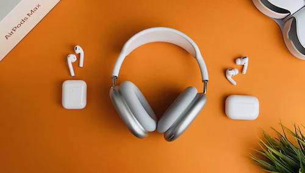
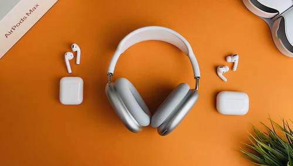

Apple airpod pro
Product Highlights
* Active Noise Cancellation blocks outside noise, so you can
immerse yourself in music
* Transparency mode for hearing and interacting with the world
around you
* Spatial audio with dynamic head tracking places sound all around you
* Adaptive EQ automatically tunes music to your ears
BUY NOW

Apple airpods second genration
Product Highlight
* Designed by Apple
* Automatically on, automatically connected
* Easy setup for all your Apple devices
* Quick access to Siri by saying “Hey Siri” or setting up double-tap
BUY NOW

Apple airpods max over ear
Product Highlight
* Apple-designed dynamic driver provides high-fidelity audio
* Active Noise Cancellation blocks outside noise, so you can immerse
yourself in music
* Transparency mode for hearing and interacting with the world around you
* Spatial audio with dynamic head tracking provides theatre-like
sound that surrounds you
BUY NOW

Beats by dre studio buds in ear
Product Highlight
* Custom acoustic platform delivers powerful,
balanced sound
* Two distinct listening modes: Active Noise Cancelling (ANC) and Transpar
mode
* Simple one-touch pairing for both Apple and Android devices
* Up to 8 hours of listening time (up to 24 hours combined with
charging case)
BUY NOW

JBL tune 230nc in ear noise canceling true wireless
Product Highlight
* In-ear headphones feature an ergonomic stick closed
design for all-day comfort
* 6mm driver unit produces pure bass sound
* Noise-cancelling technology minimizes ambient noise for a super
audio experience
* Earbuds are Bluetooth 5.0-enabled for convenient wireless
listening
BUY NOW
Google pixel true wirelesss
Product Highlight
* 12 mm dynamic speaker drivers deliver high-quality audio with powerful
bass and crisp highs
* Flush-to-ear design with three ear tip sizes and a stabilizer arc helps
earbuds stay in place and create a gentle seal for amazing sound
* Touch controls let you answer calls, as well as play, pause and skip bet
tracks easily
* Beamforming mics focus on your voice, so the person that you’re talking to
hears you loud and clear
BUY NOW

Sennhesier CX plus
Product Highlight
* Custom acoustic platform delivers powerful,
balanced sound
* Two distinct listening modes: Active Noise Cancelling (ANC) and Transpar
mode
* Simple one-touch pairing for both Apple and Android devices
* Up to 8 hours of listening time (up to 24 hours combined with
charging case)
BUY NOW

Skull candy jib
Product Highlight
* In-ear headphones feature an ergonomic stick closed
design for all-day comfort
* 6mm driver unit produces pure bass sound
* Noise-cancelling technology minimizes ambient noise for a super
audio experience
* Earbuds are Bluetooth 5.0-enabled for convenient wireless
listening
BUY NOW

SONY WF-1000XM4
Product Highlight
* 12 mm dynamic speaker drivers deliver high-quality audio with powerful
bass and crisp highs
* Flush-to-ear design with three ear tip sizes and a stabilizer arc helps
earbuds stay in place and create a gentle seal for amazing sound
* Touch controls let you answer calls, as well as play, pause and skip bet
tracks easily
* Beamforming mics focus on your voice, so the person that you’re talking to
hears you loud and clear
BUY NOW